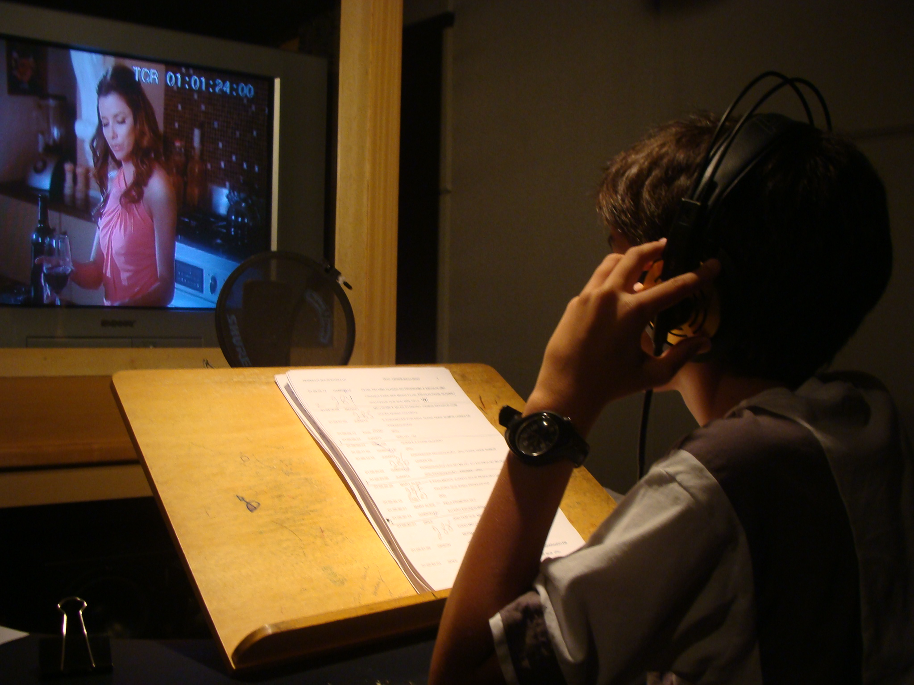

Bem-vindo ao mundo da Dublagem Brasileira!
A dublagem no Brasil é mais do que uma técnica de tradução: é uma arte. Reconhecida mundialmente, ela envolve criatividade, talento e emoção para dar vida a personagens de filmes, séries, animações e muito mais.
Os dubladores brasileiros são verdadeiros artistas, capazes de transmitir sentimentos e personalidades de forma tão marcante que muitas vezes suas vozes se tornam tão icônicas quanto os próprios personagens. Com uma interpretação cuidadosa e uma adaptação cultural precisa, eles conseguem conectar o público a histórias de diferentes partes do mundo.
Por trás de cada voz, há um trabalho minucioso que envolve direção, tradução e sincronização labial. Cada detalhe é pensado para que a experiência do espectador seja a mais natural e envolvente possível. É por isso que a dublagem brasileira é considerada uma das melhores do mundo, conquistando fãs dentro e fora do país.
Além de proporcionar acessibilidade, a dublagem brasileira tem o poder de criar uma identidade própria para os personagens, muitas vezes agregando humor e expressões locais que se tornam inesquecíveis. É uma celebração do talento e da criatividade nacional, que faz parte do imaginário cultural de gerações inteiras.
O que é a Dublagem Brasileira?
A dublagem brasileira é reconhecida mundialmente pela sua qualidade e criatividade, sendo considerada uma das melhores do mundo. Desde as primeiras adaptações de filmes e séries internacionais para o português, o país desenvolveu um estilo único, que valoriza a naturalidade das interpretações e a adequação cultural. Profissionais como dubladores, diretores e tradutores têm um papel fundamental nesse processo, transformando as produções estrangeiras em experiências acessíveis e envolventes para o público brasileiro.
O trabalho de dublagem exige não apenas habilidade vocal, mas também uma profunda compreensão do personagem e da trama. Além disso, a sincronização labial é um desafio técnico que contribui para a sensação de autenticidade. Séries animadas, filmes de grandes franquias e novelas estrangeiras são apenas alguns dos produtos que ganharam notoriedade no Brasil graças à dublagem.
Mais do que uma simples tradução, a dublagem brasileira adapta expressões e gírias para garantir que o público se sinta próximo dos personagens. Essa combinação de talento e dedicação tornou a dublagem um patrimônio cultural, sendo valorizada por gerações de espectadores.
Grandes Nomes da Dublagem
Guilherme Briggs: Conhecido por dublar Buzz Lightyear (Toy Story), Superman e Freakazoid.
Wendel Bezerra: Famoso por ser a voz de Goku (Dragon Ball) e Bob Esponja.
Selton Mello: Além de ator, é dublador em filmes como O Rei Leão (Mufasa) e séries como The Simpsons.
A História da Dublagem Brasileira
A dublagem no Brasil teve seu início nos anos 1950, quando a TV brasileira começou a exibir filmes estrangeiros e as primeiras produções de animação. Naquela época, as legendas não eram uma opção viável para grande parte da população, o que fez com que a dublagem fosse a melhor solução para tornar essas produções acessíveis ao público brasileiro.
Nos primeiros anos, o processo de dublagem era feito de forma improvisada, com poucos estúdios especializados e equipamentos rudimentares. No entanto, ao longo do tempo, o setor foi se profissionalizando, com o surgimento de estúdios especializados e a criação de técnicas para melhorar a qualidade da dublagem.
Na década de 1980, com a popularização da TV a cabo e o aumento da demanda por filmes e séries estrangeiras, a dublagem brasileira passou a se consolidar como um dos melhores serviços do mundo. As técnicas de tradução e adaptação evoluíram, assim como o nível de qualificação dos profissionais envolvidos, tornando a dublagem brasileira sinônimo de qualidade.
Hoje, a dublagem brasileira é um dos principais pilares da indústria de entretenimento no país, sendo reconhecida internacionalmente e influenciando outros mercados, como o latino-americano e o europeu.